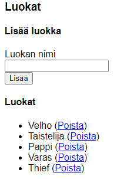

Harjoitukset 8
8.1 Taulut
Laadi aluksi samariumille kolme taulua. Voit nimetä ne esimerkiksi h8_classes, h8_races ja h8_characters. Lisää yhteydet taulujen välille.
8.2 Luokat
Ensimmäinen toiminto on luokan lisääminen. Tee lomake joka lisää tauluun uuden tiedon. Näytä tämän jälkeen tietokantaan lisätyt luokat listassa. Lisää linkki tiedon poistamista varten jokaiselle tietueelle.

8.3 Rodut
Lisää toiminto rotujen lisäämiselle ja poistamiselle. Näytä rodut taulukossa.
8.4 Hahmon lisääminen
Hahmon lisääminen vaatii lomakkeen jossa haetaan SELECT-ohjaimiin rodut ja luokat. Kannattaa ensimmäisenä pyytää käyttäjältä vain nimi, luokka ja rotu ja testata toimintaa tässä vaiheessa. Käyttäjä voi lisätä tiedot muille kentille (voima, ketteryys jne) tai voit arpoa nämä automaattisesti.
8.5 Hahmot
Näytä tietokannan hahmot div-elementeissä. Mieti sopiva muotoilu. Kun haet hahmot niin hae myös luokan ja rodun nimi toisesta taulusta (JOIN).
Vihje: käytä tässä INNER JOIN-kyselyä jossa yhdistät tiedot taulusta character, race ja class.
8.5 Hahmon muokkaaminen
Lisää toiminto hahmon muokkaamiselle ja poistamiselle. Muokkaaminen kannattaa tehdä omalle sivulle.
Kun näytät select-ohjaimessa tiedon tarvitset if/else-rakennetta. Valittu option saadaan selected-attribuutin avulla.
Lisätehtävät
Kuvat
Lisää hahmolle uusi kenttä johon voi asettaa url-osoitteessa olevan kuvan. Lisää tämä kenttä edellisen tehtävän lomakkeelle. Näytä kuva listatessasi hahmot.